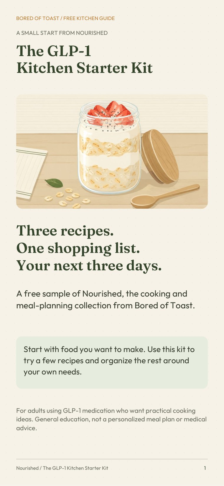
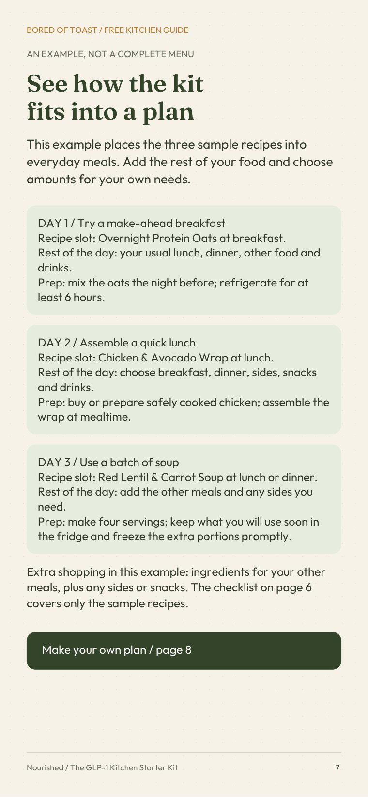

Three ways to cook
Overnight Protein Oats, Red Lentil & Carrot Soup, and a Cold Chicken & Avocado Wrap.
Free guide / By Bored of Toast
Try three recipes from Nourished, then use a shopping checklist and a three-day organizer to make your next few kitchen decisions easier.
For adults using GLP-1 medication. 9 pages. English PDF.

A freeA useful first step
Overnight Protein Oats, Red Lentil & Carrot Soup, and a Cold Chicken & Avocado Wrap.
Quantities for one batch of each recipe, with space to check what is already in your kitchen.
A worked example and a blank organizer to place recipes alongside your other meals, sides and snacks.

A real page from the kit
This kit is a sample of the full Nourished collection. Start with one recipe, check your stock and use the organizer for the rest of your food.
It is a cooking resource, not a complete three-day diet or personalized nutrition plan.
Meet the full collection →The GLP-1 Kitchen Starter Kit
Three sample recipes, shopping quantities and a practical organizer.
Email signup opens soonWe are preparing the free kit delivery. You can explore the collection in the meantime.
Explore NourishedGeneral cooking education. Choose food and portions for your own needs, and discuss personal nutrition goals with your care team. Check ingredients for allergies.